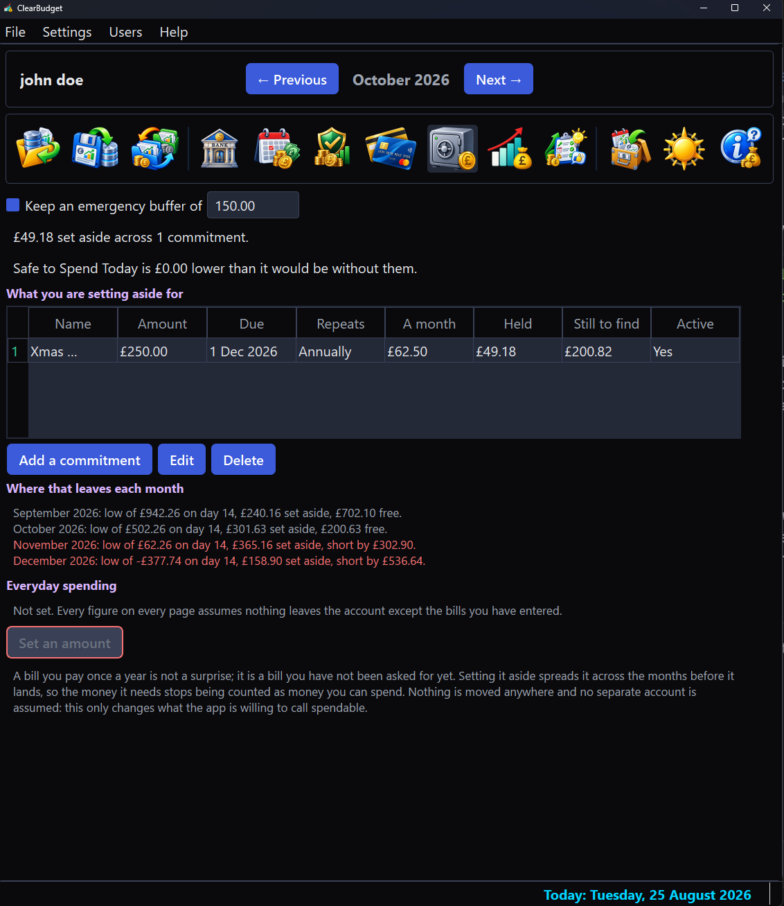

What it looks like
Most pages are shown in the dark theme; the two Graph shots are in the light one, because one button switches the whole application between them, sign-in screen included.
Every screenshot shows the same sample budget, signed in as the demonstration account "john doe". The bills, balances and card figures are invented examples chosen to exercise the app's warnings; none of it is a real person's finances.
The month you are in
Bills and income as two plain tables. Each bill carries its amount, category, what pays it and the day it falls, with Active, Skip and Paid as columns rather than buried in a dialog. Nothing here is a ledger of what already happened; it is the month as it currently stands.

Whether it holds
The bank page answers one question from money you have actually entered. It states the account position, then walks the next two months day by day, each naming its low point, the day that low falls on and the money that would keep it afloat. A month that cannot hold is not merely flagged; it is priced at the sum that would rescue it.

What you can actually spend
One number, with the promise behind it spelled out: how far it holds and the day that limits it. A month that cannot be rescued by spending nothing does not silence the figure, because that would be answering a different question; it gets its own line, in red, saying so plainly.

Cards, priced forward
One panel per card carries its limit, what is used, the headroom left and the interest it is accruing. Beneath it, the projection runs each card forward and colours every month by the headroom it leaves rather than by the balance alone.

Money already spoken for
The Reserves view holds money back for bills that have not arrived yet. Each commitment accrues across the months before it lands, the table shows what is held and what is still to find and the block beneath reads every month the same way the bank page does, less what it is holding back. Nothing is moved anywhere; only what counts as spendable changes.

The month as a picture
Every day of the month as its own bar, with a curve following the real values rather than smoothing across them. The bars carry the verdict a single line cannot: the calm resting colour on a day the account is at or above zero, amber inside an overdraft you arranged and red only where a payment would actually bounce.

The same month as a line
The same page, with the pilot button swapped from bars to a line. The line joins every day's real value and marks the days where direction changes, so the month's shape reads at a glance; a switch beside it plots every credit card on one chart instead of the bank.

What would fix it
The Recommendations view says what would make the months ahead survivable, every figure a re-run of the same day-by-day projection the bank page uses. A difficult budget gets its bills retimed and whatever shortfall survives priced month by month; a healthy one is told so plainly and offered the few retimings that buy slack it does not strictly need.